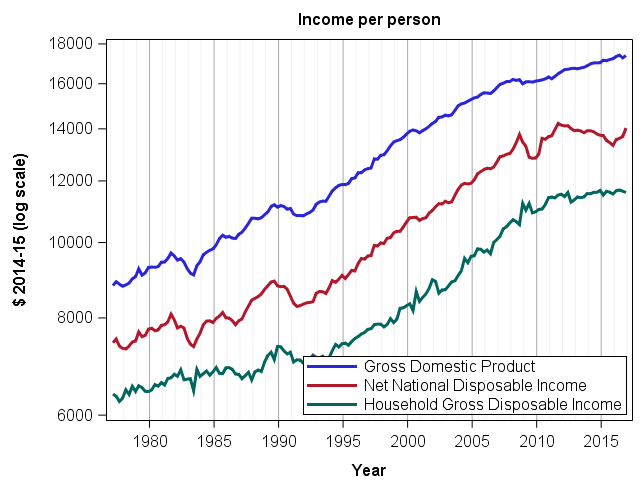

The latest National Accounts release confirms the lack of growth in Australian household incomes. Is this the start of a new era of stagnant incomes? In recent years GDP has continued to increase (save for a small drop at the end of 2016), but household incomes have hardly grown at all over the last half-decade.

The figure shows 40 years of income growth in Australia. Three indicators from the National Accounts are shown: Gross Domestic Product (GDP), Net National Disposable Income (NNDI) and Household Gross Disposable Income (HGDI). All three are shown per-capita, in constant dollars and seasonally adjusted. The vertical axis is in log form, so that equal slopes imply the same percentage rate of growth.
Over the three decades up to the global financial crisis, peak to peak GDP growth sat at around 2% per annum. Since then, it has slowed to just under 1% p.a. - but nonetheless has continued a general upwards trajectory (with the occasional negative quarter). Much of the recent growth, however, has reflected increasing mineral exports. While the value of these exports is included in 'domestic product', a large fraction of the income from these exports goes to the foreign shareholders of mining companies. The most comprehensive measure of national income, (NNDI), however, peaked in 2012 and has declined since (with some growth returning in the last year). This measure only includes income going to Australians. Similarly, the more narrowly defined Household Gross Disposable Income measure has also been flat since 2011. This measure excludes the government sector. The lack of volatility compared to NNDI reflects the cushioning effect of governments running deficits during recessions and also the different treatment of exchange rate movements in the two measures. The main proximate causes of this slow-down are clear enough - wage growth has been anaemic. See for example Greg Jericho's compilation of the latest data. The underlying causes are less clear. Nicholas Crafts argues that a slow-down in productivity growth was evident in both the US and Europe even prior to the GFC. Long run demographic trends are also reducing the fraction of the population employed. The Australian mining boom might only have allowed us to delay the onset of the income stagnation that is widespread in other rich nations. Does this mean we will soon be experiencing the same political turmoil as in the US and Europe?
Thanks Bruce, I was just looking at these numbers for Fairfax who'll be reporting the our HALE index of wellbeing and was drawing their attention to this story.
Bruce Do you think the growth of things like eBay, AirBb, Uber (as well as other forms of the gray economy - is that the right term?) are having an impact on the figures?
I think only a small impact - so far. The key question for the future is their impact on wages (or equivalent self-employment income). While Uber is less regulated than taxi driving, I don't know of evidence showing taxi regulation to lead to higher incomes for drivers.
Indeed - certainly with taxis, I haven't noticed the owneres of taxi plates looking after the interests of drivers. You'd expect the additional demand for drivers via Uber and Lyft would lift wages for drivers. I don't know enough institutional detail to be sure, but it looks to me that taxi-drivers are being suckered into supporting owners. They see competition against their servies and think it's unfair (which it is because it's not a level playing field - you don't have to buy a plate to run your car in Uber). They see Uber undermining their roles as taxi drivers and lowering returns to them in the taxi they drive which they do. But Uber is strengthening their bargaining position by giving them other options and stimulating demand for drivers!
At least in my experience, many taxi drivers have defected to uber or drive for more than one supplier (and some Uber Black drivers when business is low also simply pick up Uber X jobs).
I am surprised by the taxi industry strategy to defend itself too, when clearly drivers are the worst off (being those that lose wages with no compensation). I was watching TV a week or so ago and one of their reps was saying her dad owned 6 licenses that were now worth nothing. I wish the government could compensate me for poor investments I've made too.
Bruce Sorry I was not clear enough, was wondering whether all these 'disruptive' innovations could be starting to, add-up i.e. make the size of the overall economy , harder to measure (than it was prior to around 2004-6 )?
My feeling would be no. But it is an interesting question. On the income side, these new innovative activities are well-recorded (an advantage of digital goods) and so probably well measured in the ABS statistics. On the price side, it is possible that ABS price indices don't fully capture the benefits of these new goods. However, this is a well-known issue, and there have always been new goods.
Bruce it is interesting , do wonder about how well these sorts of things could be tracked.
the stats offices should try and figure out the purchasing power of that disposable income over time, talking into account the large additional cost margins for many products and services (supermarkets, mortgages, super, education, tolls). Not an easy task.
Can you display the graph with arithmetic sale on y axis rather than a log scale?
I suspect it may look much more dramatic..
This is a non- expert speaking here. I suspect that we are in for more of stagnation.
If we take the long view, there have been (probably millions of) micro improvements in industrialisation and even the service industry. They started with the Industrial Revolution, but really got legs from the 1950s onward.
By micro – improvements (and some have not necessarily improved but have changed something) I mean quite small redesigning of a process and sub- processes, better manufacturing technology, and better, smaller and increasingly powerful micro- digital devices.
Some have been barely noticeable (most are almost invisible to the casual observer), but the aggregation of them over time has meant a reduction in labour input across so many sectors.
The vehicle manufacturing industry is probably a prime example, where robots stamp out, and assemble the carcass of a vehicle, with only a supervisor walking the assembly line to observe any crashes, of which there are almost none. The fit out of the vehicle is also following the same path.
The resupply of components for vehicle assembly is now almost fully automated (you know what I mean – two front lights are fitted to the vehicle and two more are automatically procured, and so on).
The shipping transport industry is also an example. Long gone are the days of the “lumpers” of sacks of wheat. The ship berths and automated loading facilities swing into action, watched only by technicians overlooking safety.
Have you noticed the number of letters in your mail box has reduced considerably. The days of a postie lumping a heavy bag full of letters have disappeared. Australia Post letters division has been losing money hand over fist, and I am sure we will see paper mail delivered 3 days a week, and then two days a week, and quite possibly one day a week.
Not only have manual processes changed, but mental processes have changed. The days of adding up the prices of 20 items (much harder in the old currency) on a scrap paper bag are now the subject of WHAT WAS IT LIKE THEN ? documentaries which fascinate the kids.
The check out operator at your local supermarket really has one skill now – pointing the bar code at the scanning device, and putting the groceries into bags. The payment by bank cards is automated.
Lets not talk about driverless cars.
So all these almost invisible changes have accumulated and have slowly reduced the need for labour and management, which in turn has resulted in lower wage growth.
Actually an arithmetic scale would make the slow-down look less dramatic. (It would stretch the top of the figure so that the space between the axis values were the same as at the bottom). However, the proportionate growth approach shown by the log scale is more appropriate for our perceptions of changes in living standards. When thinking of income growth most people think of how much their living standards have improved relative to where they were recently.